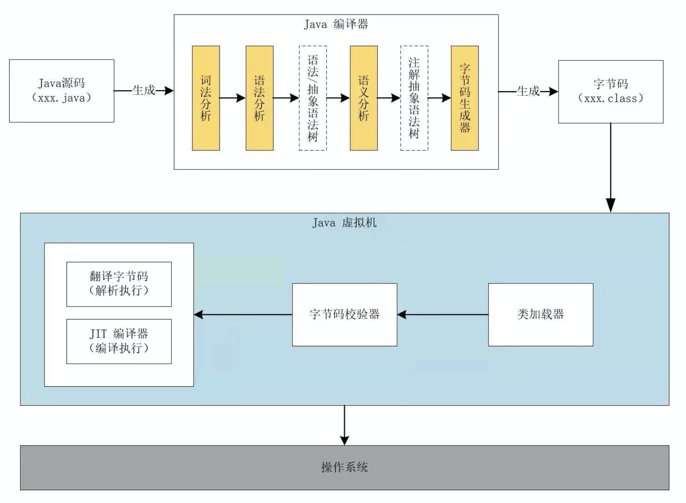
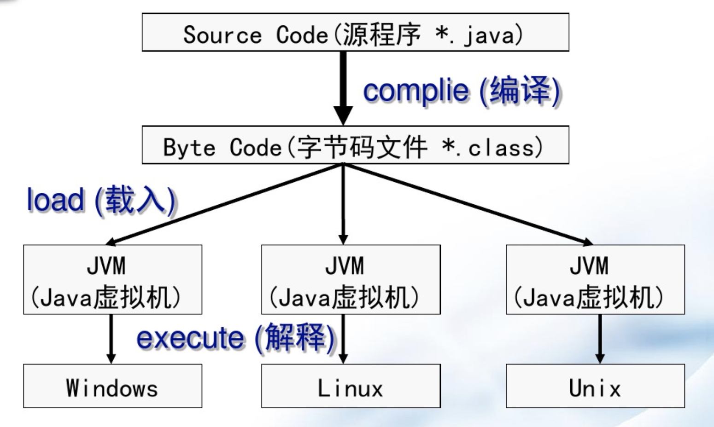

Java 语言特性
Java 语言特性
Java 是一门面向对象的编程语言，他有下面一些特点：
- 简单性
- 面向对象
- 网络技能
- 健壮性
- 安全性
- 体系结构中立
- 可移植性
- 解释性
- 高性能
- 多线程
- 动态性
Java / JDK / JRE / JVM
Java 是一门语言，而 JDK 是 Java 语言开发工具包，它包括：编译器、Java 运行环境（JRE，Java Runtime Environment）、JVM（Java 虚拟机）、监控和诊断工具。
那么 Java 语言是怎么在机器上执行，并实现一次编写、到处执行（Write Once，Run Anywhere）。
- 通过编译器将 Java 源代码（.java文件）编译成字节码（.class文件）。
- 将 class 文件放置到 Java 虚拟机中。
- Java 虚拟机使用类加载器（Class-Loader）加载 class 文件。
- 类加载完成后，会进行字节码校验，字节码校验通过后 JVM 解释器会将字节码翻译成机器码交由操纵系统执行。但并不是所有的代码都会解释执行，在主流 Java 版本中，如 JDK 8 实际是解释和编译混合的一种模式。像 Oracle Hotspot JVM 内置了 JIT compiler（Just In Time，动态编译器），他能够在运行时将热点代码编译为机器码，然后再进行执行，以提高执行效率，这时字节码就变成了编译执行。
Java 程序执行流程图如下：

那么 Java 语言是如何实现跨平台，一次编写、到处执行的？他是通过 JVM 虚拟机来屏蔽了不同服务器类型之间的差异，而 Java 语言运行在 JVM 之上，如下图：
